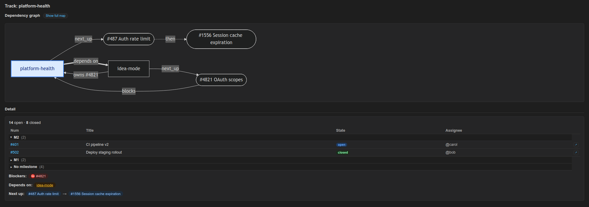

Track-aware work planning for Claude Code and Codex
The work-plan toolkit is a free, MIT-licensed command-line tool and Claude Code / Codex plugin that keeps a live, track-by-track plan of your GitHub issues, so you and your AI agents always know what is in flight, what is blocked and what to pick up next.
It is a pure Python 3.9+ standard-library CLI that re-reads state from gh, git and plain markdown track files on every run, and it ships with a VS Code extension, Work Plan Viewer, that shows the same tracks as a sidebar tree and dependency graph.
Who the work-plan toolkit is for
The work-plan toolkit is for developers who run several AI coding sessions in parallel across many GitHub issues and lose track of which session is doing what.
- Claude Code and Codex users who open a fresh agent session per workstream and need a paste-ready summary of where each one left off.
- Maintainers of several repositories who want one morning view of every active workstream across all of them.
- Small teams who want to share a plan through git instead of a separate tool, using shared tracks in the repository.
- Cursor and GitHub Copilot users, who can run the same CLI directly and load drop-in instruction files from the
shims/folder.
It is not a Jira, Linear or GitHub Projects replacement. It does not manage sprints, roadmaps or capacity; GitHub stays canonical for issue state.
Key features
The work-plan toolkit turns GitHub issues into tracks and gives each stage of a work session its own command.
Morning snapshot: brief
brief prints a multi-track snapshot of every active track across your configured repos. Run inside a configured repo and it scopes to that repo automatically; --repo=all shows everything.
Fresh-session context: orient
orient <track> (also where-was-i) prints a paste block of about 15 lines with priority, last session, next pick and git state, ready to drop into a new agent session.
End of a work block: handoff
handoff <track> logs what you touched and sets tomorrow's next_up, either by hand with --set-next or algorithmically with --auto-next, which uses no AI.
Next-up ranking presets
set-next-up picks how next-up issues are ranked: flow (milestone, dependency, priority, recency), priority-driven, backlog (oldest first) or a custom order.
Blockers and dependencies
brief and orient mark issues ⊘ blocked by #N from GitHub's native dependency links. A track's depends_on field declares dependencies between tracks.
Weekly cleanup: hygiene
hygiene runs refresh-md, reconcile, dedupe-tiers, milestone-drift and duplicates in one pass so status tables, labels and next-up queues stay honest.
Shared and private tiers
Private tracks live in your local notes_root. Shared tracks live in the repo at .work-plan/, and plan-branch can keep them on one canonical branch.
Diagnostics: doctor
doctor checks Python, git, gh sign-in, mikefarah yq, config and notes_root, then detects config drift after a folder rename or repo move. --fix repairs the safe cases.
Plan and spec liveness: plan-status
plan-status checks each plan document's declared file manifest against git and the filesystem and reports it as shipped, partial, dead, manifest-less or foreign, instead of trusting checkboxes.
Issue and label search
Work Plan Viewer's Search Issues command matches issue titles with % wildcards, and matches GitHub label names with a label: prefix, such as label:priority/%.
How it works
The work-plan toolkit treats GitHub as the source of truth and never mirrors it: track files only reference issue numbers, and every command re-derives the rest live.
- Register a repo.
work-plan init-repo myproject --github=your-org/myprojectadds it to~/.claude/work-plan/config.yml. - Create tracks.
new-trackmakes one track;groupclusters a milestone's issues into tracks with your agent's help;slotadds an issue to a track. - Work the daily rhythm.
briefin the morning,orient <track>when you open a session,handoff <track>when you stop, andhygieneonce a week.
In Claude Code, the /work-plan skill tells the agent how to run the CLI and to relay the output of brief, handoff, orient and hygiene word for word, so you can copy it into another terminal.

Install
Install the work-plan toolkit as a Claude Code or Codex plugin, as a global npm package, or with the install script; the VS Code extension is a separate install that drives the same CLI.
Claude Code plugin (recommended)
/plugin marketplace add stylusnexus/agent-plugins
/plugin install work-plan@stylus-nexusPlugin commands are namespaced: /work-plan:brief, /work-plan:handoff, /work-plan:orient, /work-plan:hygiene, /work-plan:status, and /work-plan:run <subcommand> for everything else. Update with /plugin update work-plan@stylus-nexus.
Codex plugin
codex plugin marketplace add stylusnexus/agent-plugins
codex plugin add work-plan@stylus-nexusBoth plugins come from the stylusnexus/agent-plugins marketplace.
npm (standalone CLI for any editor or terminal)
npm install -g @stylusnexus/work-planThis installs the work-plan command from the @stylusnexus/work-plan npm package. Python, gh and yq must already be on your PATH. The npm package targets macOS and Linux; on Windows, use the install script.
Install script (Cursor, Copilot, direct use)
git clone https://github.com/stylusnexus/work-plan-toolkit.git
cd work-plan-toolkit && ./install.sh # Windows PowerShell: .\install.ps1The installer checks for Python 3.9+, gh, git and mikefarah yq first, and seeds ~/.claude/work-plan/config.yml on first run.
VS Code extension: Work Plan Viewer
Install Work Plan Viewer from the VS Code Marketplace or from Open VSX for VSCodium, Cursor and Windsurf, or search for "Work Plan" by publisher stylusnexus.
code --install-extension stylusnexus.work-plan-viewerThe extension needs the CLI installed too. See the Work Plan Viewer page for features and settings.
Requirements
The work-plan CLI needs four tools on your PATH: Python 3.9+, git, the GitHub CLI and mikefarah yq.
| Tool | Version | Why |
|---|---|---|
| Python | 3.9 or newer | Runs the CLI. Standard library only, no pip install step. |
gh (GitHub CLI) | recent, signed in | Reads live issue, milestone and label state. Run gh auth login once. |
git | any 2.x | Reads the current branch, commits ahead of upstream and modified files. |
yq by mikefarah | 4.x | Reads and edits YAML frontmatter and config. The Python yq (kislyuk/yq) is not compatible. |
Work Plan Viewer also needs VS Code 1.90.0 or later. Run work-plan doctor at any time to re-check the machine.
Frequently asked questions
- What is the work-plan toolkit?
The work-plan toolkit is a free, MIT-licensed command-line tool and Claude Code / Codex plugin for track-aware daily planning over GitHub issues. It groups issues into tracks and tells you and your AI agent what is in flight, what is blocked and what to pick up next.
- What is a track?
A track is a markdown file with YAML frontmatter that lists GitHub issue numbers for one workstream, plus fields such as
launch_priority,milestone_alignment,next_up,blockersanddepends_on. The body holds a session log and a status table thatrefresh-mdkeeps in sync with GitHub.- Does the work-plan toolkit work with Codex?
Yes. Install it with
codex plugin marketplace add stylusnexus/agent-pluginsand thencodex plugin add work-plan@stylus-nexus, and invoke it with@work-planor/skills. The same CLI also runs directly from Cursor, GitHub Copilot or any terminal.- Does it replace Jira, Linear or GitHub Projects?
No. It does not manage sprints, roadmaps or capacity. GitHub stays the source of truth for issues; the toolkit only reads and references them so you and your agent stay oriented.
- Does it cache or mirror GitHub data?
No. Every command re-derives state live from
gh,gitand your track files. There is no daemon, no stored copy of GitHub state and no sync loop, and the toolkit never reads or stores GitHub tokens; it reuses your existinggh authsession.- Does it write to GitHub?
Only when you ask. Issue data comes from read-only
ghcalls, and routine writes go to local markdown files. Three opt-in, gated commands change GitHub:plan-status --issuescreates issues,close-issuecloses one, andin-progressadds or removes thework-plan:in-progresslabel.- What do I need installed?
Python 3.9 or newer,
git, the GitHub CLIgh(signed in withgh auth login) and mikefarahyq4.x, the Go version. The Pythonyqwrapper does not work. Runwork-plan doctorto check the machine and get the fix for anything missing.- Can a team share tracks?
Yes. Shared tracks live inside the repository at
.work-plan/<slug>.mdand travel withgit pullandgit push. Theplan-branchcommand can pin them to one canonical branch, by default an orphanwork-plan/planbranch, so planning stays out of code branches and pull requests. Private tracks stay in your localnotes_root.- Is there a VS Code extension?
Yes. Work Plan Viewer (
stylusnexus.work-plan-viewer) is on the VS Code Marketplace and Open VSX. It adds a sidebar tree of repos and tracks, a Mermaid dependency graph, issue search and confirm-gated writes, and it runs the work-plan CLI for every read and write.- Does the CLI call an AI model?
No. The AI-assisted subcommands
group,suggest-prioritiesandauto-triageprint a prompt for your agent session, the agent saves a JSON answer, and you re-run the command with--apply.auto-triage --heuristicworks offline with no model at all.
Links and documentation
- work-plan-toolkit source code and README on GitHub
- Usage walkthrough: morning brief, handoff, orient and weekly hygiene
- Architecture: track model, tiers and data flow
- work-plan CLI command reference
- Work Plan Viewer for VS Code
- @stylusnexus/work-plan on npm
- Work Plan Viewer on the VS Code Marketplace
- Work Plan Viewer on Open VSX
- Security policy